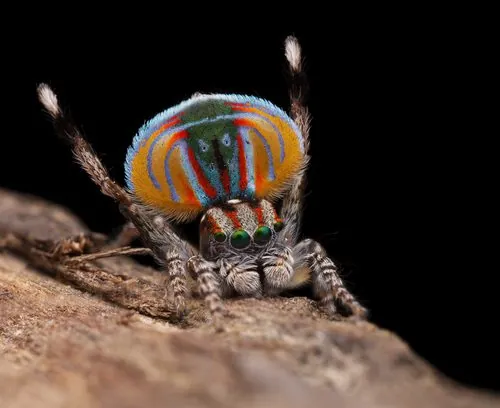

蛛形动物 · 动物界
孔雀跳蛛 Maratus volans

澳大利亚特有的小型跳蛛，雄性求偶时会展开色彩斑斓的腹部“屏风”并跳舞，因外形华丽而被称为蜘蛛中的孔雀。
- 分类
- 门节肢动物门纲蛛形纲目蜘蛛目科跳蛛科属孔雀跳蛛属
- 栖息环境
- 澳大利亚南部的灌丛、草地和落叶层
- 地理分布
- 澳大利亚南部及东南部地区
- 保护级别
- IUCN 暂无评估；非中国原产，在中国无保护级别
物种志
孔雀跳蛛雄性体长 4–5 毫米，雌性 6–8 毫米，体型很小。雄蛛的腹部两侧和末端有可展开的彩色皮膜，展开时像一把华丽的扇子，上面有红、蓝、橙、黑等鲜艳花纹；它的第三对足也长有白色长毛，求偶时会举起摆动。雌蛛体色朴素，呈灰褐色。
它分布于澳大利亚南部的灌丛、草地和落叶层，昼行性，靠敏锐视力捕食小型昆虫。繁殖期雄蛛会在雌蛛面前展开彩色腹部皮膜，举起前足跳起独特的“孔雀舞”，并振动腹部发出信号；如果雌蛛不接受，雄蛛可能被当作猎物捕食。雌蛛在落叶层中产卵并守护卵囊。孔雀跳蛛对人无害，无毒，是观赏价值极高的跳蛛，近年在自然摄影中备受关注，目前尚未被列为受威胁物种。
形态与习性
- 食性小型昆虫
- 体长雄蛛 4–5 mm，雌蛛 6–8 mm
- 寿命约 1 年
- 繁殖卵生，雌蛛守护卵囊
- 活动节律昼行性，靠视觉捕猎
- 求偶雄蛛展开彩色腹部皮膜并举起前足跳舞
趣味知识
- 雄性孔雀跳蛛求偶时会展开腹部两侧的彩色皮膜，像孔雀开屏一样。
- 它还会举起前足、振动腹部跳舞，用视觉信号吸引雌蛛。
- 孔雀跳蛛体型只有几毫米，却因华丽的求偶表演成为自然摄影明星。